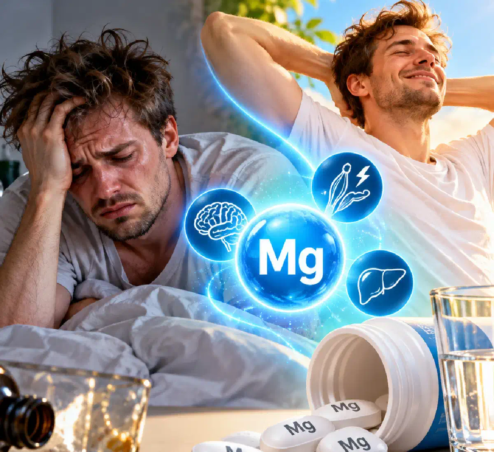

+38(068)
79 72 782
+38(068)
79 72 782Можно ли принимать магний при похмелье
Польза, противопоказания и рекомендации врача


Бесплатная консультация, работаем круглосуточно 24/7
Польза, противопоказания и рекомендации врача

Дата написания: 30 окт. 2026 г.
Последнее обновление: 30 окт. 2026 г.
Магний при похмелье часто рассматривают как средство для восстановления нервной системы, уменьшения тревожности, мышечного напряжения и общей слабости после употребления алкоголя. Действительно, этот минерал участвует в работе сердца, головного мозга, мышц и поддержании электролитного баланса. При длительном злоупотреблении спиртными напитками может развиваться дефицит магния, который дополнительно ухудшает самочувствие человека. Однако важно понимать, что препараты магния не нейтрализуют алкоголь, не ускоряют его выведение и не являются доказанным способом лечения похмельного синдрома. Принимать магний после алкоголя можно при наличии показаний и отсутствии противопоказаний, но необходимость, форму препарата и дозировку желательно согласовать с врачом.
Алкоголь способен нарушать обмен магния и других электролитов, необходимых для нормального функционирования организма. Под воздействием этанола изменяется работа почек, увеличивается мочеотделение и при определённых условиях усиливается потеря жидкости и минеральных веществ. При систематическом употреблении спиртного дополнительную роль играют недостаточное питание, заболевания желудочно-кишечного тракта и нарушения всасывания питательных веществ. Особенно часто дефицит магния выявляют у людей с алкогольной зависимостью, которые употребляют спиртные напитки продолжительное время. Недостаток этого элемента может сопровождаться мышечной слабостью, судорогами, повышенной нервно-мышечной возбудимостью и нарушениями сердечного ритма. Однако после однократного употребления алкоголя снижение магния развивается далеко не у каждого человека. Поэтому выраженность похмелья нельзя оценивать исключительно по предполагаемой потере этого минерала.
Дефицит магния после алкоголя может формироваться по нескольким причинам. В первую очередь значение имеют повышенные потери жидкости, повторная рвота, диарея и недостаточное поступление минералов с пищей. При длительном употреблении спиртного нередко нарушается режим питания: человек пропускает приёмы пищи, употребляет недостаточно овощей, круп, орехов и других источников магния. Дополнительно хроническое воздействие алкоголя может сопровождаться нарушениями работы почек и пищеварительной системы. Наибольшему риску подвержены пациенты после длительных запоев, люди с хроническими заболеваниями и выраженным истощением. В подобных ситуациях возможно одновременное снижение уровня калия, магния и других электролитов. Для подтверждения дефицита необходимы лабораторные исследования, поскольку слабость, тревожность и головокружение могут быть связаны не только с недостатком магния, но и с другими последствиями употребления алкоголя.
Принимать магний при похмелье в некоторых случаях допустимо, особенно если препарат ранее назначил врач или у пациента подтверждён дефицит этого элемента. При сохранной функции почек и соблюдении рекомендованных доз препараты обычно хорошо переносятся, однако их нельзя считать универсальным средством от последствий употребления спиртного. Магний не устраняет действие продуктов распада этанола, не снижает концентрацию алкоголя в крови и не предотвращает опасные осложнения алкогольной абстиненции. Самостоятельный приём особенно нежелателен при повторной рвоте, сильном обезвоживании, выраженной слабости и нарушениях сердечного ритма. В подобных ситуациях необходимо сначала оценить общее состояние пациента. Если после употребления алкоголя сохраняются значительные симптомы интоксикации, может потребоваться лечение алкогольной интоксикации под наблюдением медицинского специалиста.
Магний участвует в сотнях биохимических реакций и необходим для нормального функционирования нервной, сердечно-сосудистой и мышечной систем. Он задействован в процессах энергетического обмена, передаче нервных импульсов, сокращении мышц и поддержании нормального сердечного ритма. После употребления алкоголя эти функции сохраняют особое значение, поскольку организм может испытывать последствия обезвоживания, нарушения сна и недостаточного питания. При подтверждённом дефиците восполнение магния помогает восстановить нормальную работу физиологических механизмов, зависящих от этого минерала. Однако важно отличать пользу устранения дефицита от лечения самого похмелья. Даже при нормализации уровня магния у человека могут сохраняться головная боль, тошнота, усталость и другие симптомы, вызванные воздействием алкоголя. Поэтому восстановление должно учитывать питание, достаточное поступление жидкости, отдых и общее состояние здоровья.
Магний не относится к препаратам с доказанной эффективностью против похмельного синдрома. У некоторых пациентов при его недостатке могут наблюдаться мышечные спазмы, слабость или повышенная нервно-мышечная возбудимость, которые уменьшаются после коррекции дефицита. Однако это не означает, что приём магния поможет каждому человеку избавиться от головной боли, тошноты, тревожности и других последствий употребления алкоголя. Похмелье развивается под влиянием нескольких факторов, включая раздражение желудка, нарушение сна, воспалительные реакции и изменения водного баланса. Простое восполнение одного минерала не устраняет все эти механизмы. При лёгком похмелье основное значение имеют время, отдых, питание по переносимости и восполнение жидкости при жажде или обезвоживании. Если симптомы выраженные, продолжительные или сопровождаются ухудшением сознания, необходимо исключить более опасные состояния, чем обычное похмелье.
Недостаток магния может проявляться различными симптомами, выраженность которых зависит от степени дефицита и сопутствующих нарушений. На начальных этапах возможны общая слабость, повышенная утомляемость, снижение аппетита и тошнота. При более значительном снижении концентрации магния иногда возникают мышечные подёргивания, спазмы, судороги, покалывание в конечностях и нарушения сердечного ритма. В тяжёлых случаях возможны серьёзные неврологические и сердечно-сосудистые осложнения. Однако перечисленные симптомы неспецифичны и могут встречаться при обезвоживании, алкогольной абстиненции, нарушении уровня глюкозы или других электролитных расстройствах. Для диагностики врач может назначить анализ крови на магний, калий, кальций и оценку функции почек. При подозрении на нарушения ритма также проводится ЭКГ. Самостоятельно устанавливать диагноз дефицита магния только по симптомам после алкоголя не рекомендуется.
Тревожность после алкоголя может возникать вследствие изменения активности нейромедиаторных систем головного мозга, нарушения сна и других последствий воздействия этанола. Человек может испытывать внутреннее напряжение, раздражительность, беспокойство, учащённое сердцебиение и трудности с концентрацией внимания. Магний участвует в функционировании нервной системы, однако убедительных доказательств его эффективности именно для лечения тревожности после употребления алкоголя недостаточно. При подтверждённом дефиците коррекция уровня магния может быть полезной частью медицинской помощи, но не заменяет диагностику причины симптомов. Особенно важно учитывать, что выраженная тревога после длительного употребления спиртного иногда становится одним из первых проявлений алкогольного абстинентного синдрома. Если тревожность сопровождается сильным тремором, потливостью, тахикардией и повышением артериального давления, необходима оценка врача, поскольку состояние может прогрессировать.
Тремор рук после алкоголя может развиваться по различным причинам. После однократного употребления спиртного дрожание иногда связано с общей слабостью, тревогой, недостатком сна или нарушением обмена веществ. У пациентов с алкогольной зависимостью выраженный тремор часто является признаком синдрома отмены. Дефицит магния также способен вызывать нервно-мышечные нарушения, однако далеко не каждый тремор свидетельствует о недостатке этого элемента. Если дефицит подтверждён, его коррекция может уменьшить связанные с ним проявления. При этом магний не является самостоятельным средством лечения алкогольной абстиненции и не предотвращает судорожные приступы, возникающие при тяжёлом синдроме отмены. Если дрожание рук усиливается, сопровождается потливостью, бессонницей, учащённым пульсом или выраженным беспокойством, необходима круглосуточная наркологическая помощь или обращение в экстренную службу при признаках опасного состояния.
Нарушение сна считается одним из распространённых последствий употребления алкоголя. Несмотря на то что спиртные напитки могут первоначально вызывать сонливость, в дальнейшем они нарушают нормальную структуру сна, способствуют частым пробуждениям и ухудшают его качество. После алкоголя человек нередко жалуется на бессонницу, поверхностный сон, тревожные сновидения и отсутствие ощущения полноценного отдыха. Магний участвует в работе нервной системы, но доказательств, что его приём быстро восстанавливает сон именно после употребления спиртного, недостаточно. При подтверждённом дефиците восполнение минерала может быть обоснованным, однако при отсутствии дефицита ожидаемый эффект неопределён. Для восстановления сна важно прекратить употребление алкоголя, обеспечить спокойную обстановку и избегать самостоятельного применения снотворных или седативных препаратов. При длительной бессоннице после запоя необходимо исключить алкогольную абстиненцию.
Головная боль, слабость и головокружение относятся к распространённым симптомам похмельного синдрома. Они могут возникать вследствие нарушения сна, раздражения нервной системы, обезвоживания и других физиологических изменений после употребления этанола. Магний имеет определённое значение в профилактике некоторых форм мигрени, однако эти данные нельзя автоматически переносить на головную боль при похмелье. Надёжных доказательств того, что разовый приём магния устраняет похмельную головную боль, нет. При выраженной слабости важно оценить питание, количество потребляемой жидкости и наличие сопутствующих заболеваний. Головокружение иногда связано со снижением артериального давления, нарушением уровня глюкозы или электролитными расстройствами. Если симптомы интенсивные, сопровождаются обмороком, нарушением координации, сильной рвотой или необычной головной болью, необходима срочная медицинская оценка.
Магний B6 представляет собой комбинацию магния и витамина B6 (пиридоксина). Такие препараты применяются преимущественно для восполнения соответствующих нутриентов при наличии показаний. Витамин B6 участвует в обмене аминокислот и работе нервной системы, а магний необходим для многочисленных ферментативных процессов. Однако сочетание этих веществ не является доказанным средством для лечения похмелья или алкогольной интоксикации. Не следует путать витамин B6 с витамином B1 (тиамином), который имеет особое значение для пациентов с хроническим злоупотреблением алкоголем и риском энцефалопатии Вернике. Самостоятельно принимать высокие дозы витамина B6 продолжительное время нежелательно, поскольку его избыток может вызывать поражение периферических нервов. Перед использованием комбинированных препаратов необходимо учитывать состав, дозировку и возможные противопоказания.
Препараты магния выпускаются в различных формах, включая цитрат, глицинат, лактат, хлорид и оксид магния. Они отличаются растворимостью, биодоступностью и особенностями переносимости. Например, цитрат, лактат и некоторые другие хорошо растворимые соли магния обычно усваиваются лучше, чем оксид магния. При этом отдельные формы могут чаще вызывать послабление стула или дискомфорт в животе. Если после алкоголя присутствуют тошнота, диарея или боли в животе, самостоятельный выбор препарата особенно нежелателен. Не существует убедительных доказательств, что какая-либо конкретная форма магния лучше остальных устраняет похмельный синдром. При подтверждённом дефиците выбор зависит от его выраженности, состояния почек, переносимости препаратов и наличия сопутствующих заболеваний. Внутривенные препараты магния используются только по медицинским показаниям и не предназначены для обычного самостоятельного лечения похмелья.
Универсального временного интервала, через который разрешается принимать магний после алкоголя, не существует. Решающее значение имеют общее состояние человека, наличие показаний к препарату, функция почек и возможность безопасно принимать лекарства внутрь. Если человек полностью пришёл в сознание, нормально глотает, способен принимать пищу и жидкости и не испытывает повторной рвоты, ранее назначенная терапия магнием обычно может продолжаться согласно рекомендациям врача. Однако начинать новый курс исключительно ради облегчения похмелья необязательно, поскольку эффективность такого подхода не доказана. Не следует принимать таблетки человеку с выраженной сонливостью, нарушением сознания или затруднением глотания из-за риска аспирации. При сильной алкогольной интоксикации приоритетом являются оценка жизненно важных функций, исключение опасных осложнений и своевременная медицинская помощь.
Дозировка магния зависит от возраста, состояния здоровья, функции почек, формы препарата и наличия подтверждённого дефицита. При выборе средства необходимо обращать внимание на количество элементарного магния, указанное на упаковке, поскольку масса соли магния и содержание самого минерала отличаются. Для взрослых верхний допустимый уровень потребления магния из добавок и лекарственных средств без специального врачебного назначения, согласно американским рекомендациям, составляет 350 мг элементарного магния в сутки. Этот показатель не является рекомендуемой дозой для лечения похмелья. При лабораторно подтверждённом дефиците врач может назначить другую схему и контролировать эффективность лечения. Не рекомендуется самостоятельно увеличивать дозировку в надежде быстрее устранить слабость, тремор или головную боль. Избыточное поступление магния способно вызывать диарею, снижение артериального давления и другие нежелательные реакции, особенно при нарушении функции почек.
Магний может применяться совместно с некоторыми витаминами группы B, однако необходимость таких комбинаций определяется индивидуально. В медицинской практике при хроническом употреблении алкоголя особое внимание уделяют дефициту тиамина, который способен приводить к тяжёлым неврологическим осложнениям. При наличии показаний врач может назначать витамин B1 и коррекцию электролитных нарушений, включая недостаток магния. При этом бесконтрольный приём комплексных витаминов не заменяет полноценного обследования. Также важно учитывать лекарственные взаимодействия: препараты магния способны ухудшать всасывание отдельных антибиотиков, включая тетрациклины и фторхинолоны, а также некоторых препаратов для лечения остеопороза. На обмен магния могут влиять мочегонные средства и другие лекарства. Если пациент после алкоголя самостоятельно принимает обезболивающие, седативные или другие препараты, необходимо проверить их совместимость и противопоказания с врачом.
Основным серьёзным ограничением для самостоятельного приёма магния являются выраженные нарушения функции почек. При почечной недостаточности организм может недостаточно эффективно выводить избыток минерала, что повышает риск гипермагниемии. Осторожность требуется и при обезвоживании с возможным острым повреждением почек, снижении артериального давления, некоторых нарушениях сердечной проводимости и при использовании других магнийсодержащих средств. Необходимо учитывать индивидуальную непереносимость компонентов препарата и особенности конкретной лекарственной формы. При выраженной рвоте или диарее таблетки могут плохо переноситься и не решают проблему возможной потери жидкости и электролитов. Противопоказания должны оцениваться по инструкции к конкретному препарату и клиническому состоянию пациента. Если после употребления алкоголя появились перебои в работе сердца, обмороки, сильная слабость или нарушение сознания, следует отказаться от самолечения и обратиться за медицинской помощью.
Препараты магния способны вызывать нежелательные реакции, особенно при превышении дозировки или наличии сопутствующих заболеваний. Наиболее распространёнными побочными эффектами пероральных средств являются диарея, тошнота, спазмы и дискомфорт в животе. При похмелье подобные симптомы могут дополнительно ухудшать состояние, поскольку слизистая желудка уже может быть раздражена алкоголем. При значительном избытке магния в крови возможны снижение артериального давления, выраженная мышечная слабость, сонливость, нарушения сердечного ритма и угнетение дыхания. Такие осложнения встречаются значительно реже, но особенно опасны при нарушении функции почек или неправильном использовании высоких доз. Если после приёма препарата появились необычная слабость, затруднённое дыхание, выраженное головокружение или перебои в работе сердца, необходима срочная медицинская помощь. Безопасность магния зависит не только от выбранной формы, но и от состояния организма.
После длительного запоя риск дефицита магния значительно выше, чем после однократного употребления алкоголя. Продолжительное воздействие этанола, недостаточное питание, повторная рвота и нарушения работы внутренних органов могут приводить к выраженным электролитным расстройствам. Однако самостоятельный приём магния после запоя не обеспечивает безопасного прекращения употребления алкоголя и не предотвращает развитие тяжёлого синдрома отмены. В такой ситуации необходимо оценить сознание, дыхание, артериальное давление, пульс, наличие тремора и неврологических симптомов. Врач может рекомендовать анализы на магний, калий и другие электролиты, исследование функции почек и ЭКГ. При относительно стабильном состоянии некоторые пациенты могут получать медицинскую помощь дома, однако при судорогах, галлюцинациях, спутанности сознания или других опасных симптомах требуется стационар. Вывод из запоя на дому возможен только после оценки рисков и отсутствия показаний к госпитализации. При длительном употреблении спиртного также важно рассмотреть необходимость дальнейшего лечения алкогольной зависимости.
Обычное похмелье чаще возникает после эпизода употребления алкоголя и сопровождается головной болью, тошнотой, жаждой, утомляемостью, раздражительностью и нарушением концентрации внимания. Обычно симптомы постепенно уменьшаются по мере восстановления организма. Алкогольный абстинентный синдром развивается преимущественно у людей с физической зависимостью после резкого уменьшения количества алкоголя или прекращения его употребления. Он может проявляться выраженным тремором, потливостью, тахикардией, повышением артериального давления, тревогой, бессонницей и тошнотой. В тяжёлых случаях возможны судорожные приступы, галлюцинации и алкогольный делирий. В отличие от обычного похмелья, абстиненция может представлять непосредственную угрозу жизни и требует медицинской оценки. Магний не является самостоятельным лечением этого состояния. При наличии физической зависимости безопасная отмена алкоголя иногда требует медикаментозной терапии и наблюдения специалистов. Если симптомы отмены выражены, вывод из запоя должен проводиться с учётом риска осложнений.
Обратиться к врачу рекомендуется, если после употребления алкоголя наблюдаются выраженный тремор, сильная тревожность, учащённое сердцебиение, повторная рвота, значительные колебания артериального давления или симптомы, которые не уменьшаются и ухудшают общее состояние. Особенно важно получить медицинскую оценку после длительного запоя, при ранее перенесённых судорогах, хронических заболеваниях сердца, печени или почек. Вызов нарколога на дом позволяет провести первичный осмотр пациента, оценить тяжесть состояния и определить необходимость лабораторных исследований, лечения или госпитализации. При этом не всякое ухудшение самочувствия связано исключительно с алкоголем: врач должен исключить другие опасные заболевания. Если появились судороги, галлюцинации, выраженная спутанность сознания, потеря сознания, боль в груди, затруднение дыхания или признаки тяжёлого обезвоживания, необходимо немедленно вызвать экстренную медицинскую помощь по номеру 103 или 112. Такие состояния нельзя лечить самостоятельно магнием или другими препаратами.
Инфузионная терапия после употребления алкоголя может применяться при наличии конкретных медицинских показаний, например выраженного обезвоживания, невозможности восполнять жидкость через рот или определённых электролитных нарушений. Однако сама по себе капельница от алкоголя на дому не является обязательной процедурой при обычном похмелье. Внутривенное введение жидкости не ускоряет метаболизм этанола и не гарантирует быстрого исчезновения всех симптомов. Перед назначением инфузии врач оценивает сознание, дыхание, гемодинамику, признаки обезвоживания и сопутствующие заболевания. При необходимости проводятся лабораторные исследования и ЭКГ. Препараты магния могут входить в лечение подтверждённого дефицита или отдельных осложнений, но не должны вводиться всем пациентам без показаний. При тяжёлой алкогольной абстиненции может потребоваться комплексная терапия, включающая лекарственные средства для предотвращения судорог, коррекцию нарушений обмена веществ и введение тиамина. Вопрос о лечении дома или в наркологическом стационаре решается индивидуально.
При лёгком похмелье основой восстановления являются прекращение употребления алкоголя, полноценный отдых, щадящее питание и достаточное поступление жидкости. Если человек испытывает жажду, рекомендуется пить воду небольшими порциями, ориентируясь на переносимость и индивидуальные ограничения. При рвоте или значительных потерях жидкости могут потребоваться растворы для пероральной регидратации, а при невозможности пить — медицинская помощь. После алкоголя желательно избегать повторного употребления спиртного для временного облегчения самочувствия, поскольку это увеличивает риски и может способствовать развитию зависимости. Не следует самостоятельно сочетать седативные препараты со спиртным. Обезболивающие также требуют осторожности: парацетамол может представлять дополнительный риск для печени в определённых ситуациях, а ибупрофен и аспирин способны раздражать желудок и повышать риск желудочно-кишечных осложнений. Универсального средства, которое гарантированно устраняет похмелье за несколько часов, не существует.
Восстановление после употребления алкоголя должно учитывать тяжесть симптомов, длительность употребления спиртного, возраст человека и наличие хронических заболеваний. При лёгком похмелье обычно достаточно отдыха, питания по переносимости и восполнения жидкости. Приём магния может быть оправдан при подтверждённом дефиците или ранее установленной необходимости его применения, однако не должен рассматриваться как обязательное средство после каждого эпизода употребления алкоголя. Если возникают сильный тремор, выраженная тревожность, повторная рвота, тахикардия или другие признаки возможной абстиненции, рекомендуется медицинская оценка. При продолжительном употреблении спиртного важно не ограничиваться устранением отдельных симптомов, а оценить необходимость дальнейшего лечения алкоголизма или другом городе по месту проживания пациента. Своевременное обследование позволяет выявить нарушения электролитного баланса, определить показания к медикаментозной терапии и снизить риск осложнений. Главное правило — магний может помочь при его дефиците, но не заменяет полноценную медицинскую помощь при алкогольной интоксикации и синдроме отмены.

Статья проверена экспертом
Робулец Ольга
Врач нарколог, ординатор
Возможно интересная статья:
Лечение тремора и тревоги после алкоголя

Да, мы строго соблюдаем полную конфиденциальность на всех этапах лечения. Информация о пациенте, диагнозе и прохождении терапии не передаётся третьим лицам. Обращение к нам не влечёт постановку на учёт. Вы можете быть уверены в безопасности и анонимности.
Номер телефона:
+380 (68) 797 27 82
+380 (50) 021 69 57
Адрес наркологического центра вашего города уточняйте по
телефону
Работаем в: Киеве, Одессе, Львове, Харькове, Днепре,
Запорожье, Черкассах, Чугуеве, Черноморске, Каменском
Telegram: t.me/umbrellaplus
График работы: Круглосуточно